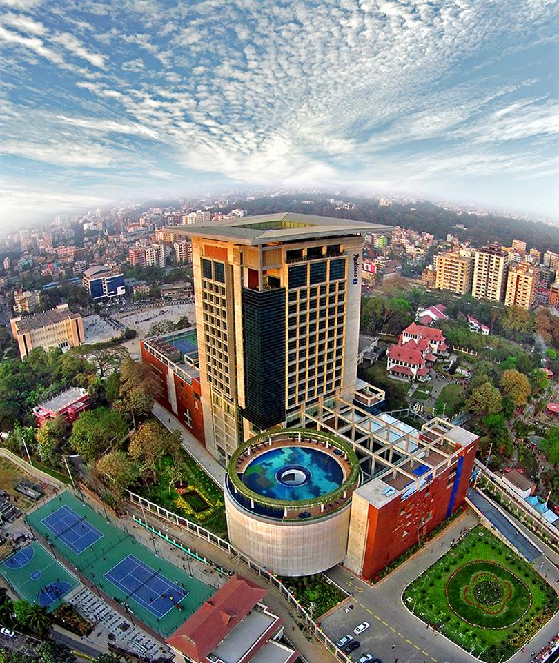

Chittagong is large port city on the southeastern coast of Bangladesh. The Ethnological Museum has exhibits about the many different ethnic tribes across the country. Zia Memorial Museum, inside the former Old Circuit House, displays items belonging to former president Ziaur Rahman, who was assassinated on the site in 1981. The landmark Chandanpura Mosque has many onion-shaped domes and brightly painted minarets.
The Chittagong Division is known for its rich biodiversity. Over 2000 of Bangladesh's 6000 flowering plants grow in the region. Its hills and jungles are laden with waterfalls, fast flowing river streams and elephant reserves
 Click to view the map